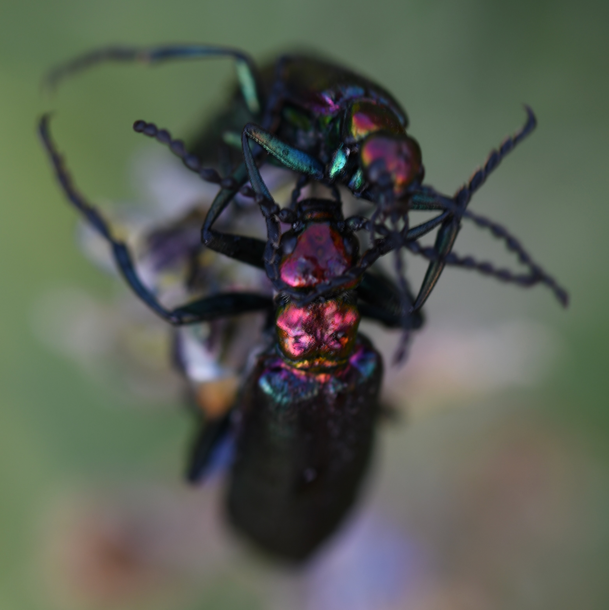
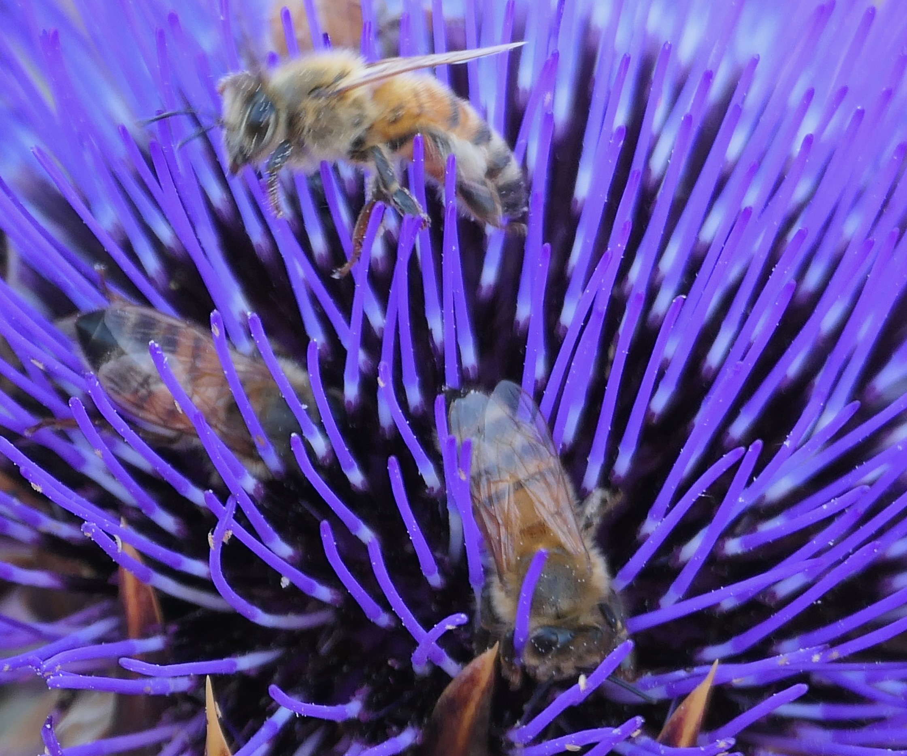
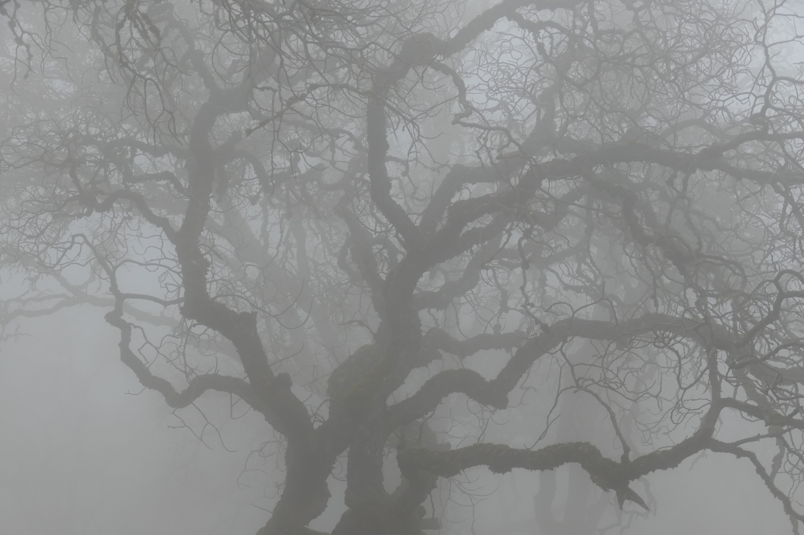
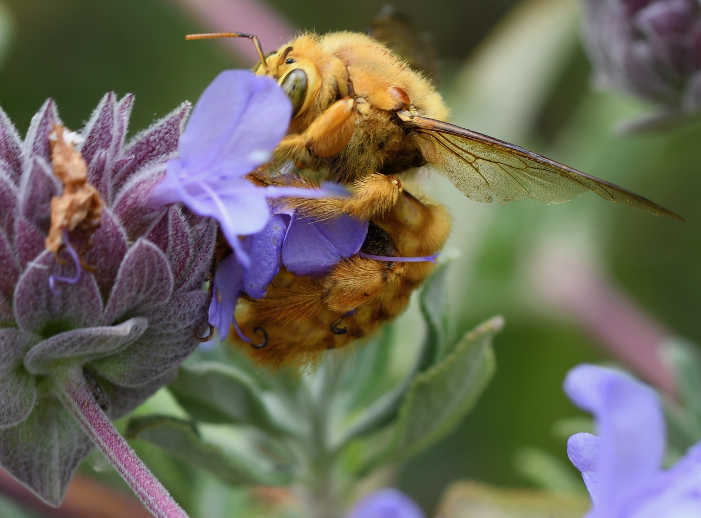
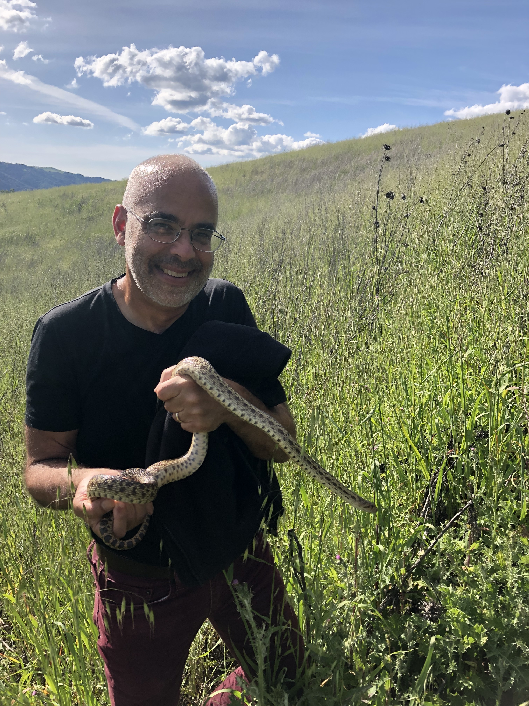

David B Jaffe
I was once a bicycle messenger in downtown SF. In subsequent lives I did algebraic geometry, then coding theory, then genome assembly. There are ninety-eight other David B Jaffes, who do different things. I once got a phone call offering me a job on the US Supreme Court; must've been for one of them.
More recently, I've worked on antibodies, including analysis of single cell VDJ data (10x Genomics) and development of therapeutics from antibodies found in humans (Infinimmune). My latest project is predicting immunogenicity of antibody drugs, and that led to problems involving PDFs: how to ready scientific papers for LLMs. I'm down that rabbit hole.
I'm a fan of reproducible science, open source, Rust. I use the hated AI to help code. Hopefully no one is offended, ha ha. Nonreproducible nonscience: I run trails with a camera and try not to fall.
I'm at 99.david.b.jaffe@gmail.com. I work independently and am also down for collaborations.
Las Trampas
June 19, 2026
Nikon D7500; 90mm ƒ2.8
Tennessee Valley Trail
August 30, 2025
Fujifilm X-H2S; 70-300mm ƒ4-5.6
Lily Lake trail near Crested Butte, Colorado
July 31, 2021
Nikon D7500; 90.0 mm ƒ2.8

Crested Butte, Colorado
August 5, 2021
Nikon D7500; 90mm ƒ2.8

Rocky Ridge Road, on EBMUD land abutting Las Trampas
June 19, 2021
Panasonic DC-FZ1000M2
Año Nuevo State Park
January 8, 2022
Sony DSC-RX10M4

Morgan Territory
January 2, 2021
Panasonic DC-FZ1000M2

June 5, 2022
Nikon D7500; 90mm ƒ2.8
June 8, 2024
Fujifilm X-H2S; 70-300mm ƒ4-5.6

Pleasanton Ridge
January 30, 2025
Fujifilm X-H2S; 70-300mm ƒ4-5.6
Pubs
- 2025Preclinical development of a half life extended anti-IL-22 drug for the treatment of atopic dermatitis [abstract] · Gibbons et al. · Journal of Investigative Dermatology URLThis is the anti-IL22 antibody therapeutic, based on a human sample, that we found at Infinimmune while I was working there.
- 2025A first-in-class anti-IL17F antibody discovered in humans and engineered in silico for the treatment of inflammatory bowel disease [abstract] · Gibbons et al. · Gastroenterology URL
- 2025Preclinical development of an anti-IL-13 antibody for the treatment of atopic dermatitis [abstract] · Gibbons et al. · Journal of Investigative Dermatology URL
- 2025Better antibodies engineered with a GLIMPSE of human data · Hepler et al. · bioRxiv URL
- 2024Deep repertoire mining uncovers ultra-broad coronavirus neutralizing antibodies targeting multiple spike epitopes · Hurtado et al. · Cell Reports PubMed
- 2022enclone: precision clonotyping and analysis of immune receptors · Jaffe et al. · bioRxiv URLThis is a tool I built at 10x Genomics to understand antibodies. It was my first introduction to immunology, and the clonotyping algorithm is (I think) still used by the 10x Genomics pipeline to process VDJ data.
- 2022Functional antibodies exhibit light chain coherence · Jaffe et al. · Nature PubMedFor most functional antibodies, the heavy chain determines the light chain.
- 2019Genomic architecture and introgression shape a butterfly radiation · Edelman et al. · Science PubMed
- 2018Dissecting the causal mechanism of X-linked dystonia-parkinsonism by integrating genome and transcriptome assembly · Aneichyk et al. · Cell PubMed
- 2018How to determine the genome sequence of single insects [citation only] · Keivanfar et al.I collected individual insects, some very small, then we sequenced and assembled them. We needed only one 1 ng of DNA! The assemblies did not have the chromosome-level contiguity that people expected, but because the starting material was a single wild insect, in some ways the assemblies would better reflect biology than would those obtained from a sample comprised of many individuals.
- 2018Reference quality assembly of the 3.5-Gb genome of Capsicum annuum from a single linked-read library · Hulse-Kemp et al. · Horticulture Research PubMed
- 2017Direct determination of diploid genome sequences · Weisenfeld et al. · Genome Research PubMed
- 2017Improved de novo genome assembly: linked-read sequencing combined with optical mapping produce a high quality mammalian genome at relatively low cost · Mohr et al. · bioRxiv URL
- 2016Evaluation of DISCOVAR de novo using a mosquito sample for cost-effective short-read genome assembly · Love et al. · BMC genomics PubMed
- 2014Comprehensive variation discovery in single human genomes · Weisenfeld et al. · Nature genetics PubMedThis paper introduced DISCOVAR, a method for assembling genomes from paired 250 base reads, made from a PCR-free library, starting from 1 µg of DNA, and used subsequently to assemble the genomes of over 100 mammals, see "A comparative genomics multitool for scientific discovery and conservation", 2020, Nature. One thing that is not widely understood about genome assembly is that everything depends on DNA starting material, and in many cases one cannot get a large quantity of high molecular weight DNA. The approach here was optimal for the sweet spot where one could get DNA, but not necessarily of high molecular weight.
- 2014The genomic substrate for adaptive radiation in African cichlid fish · Brawand et al. · Nature PubMed
- 2013Assemblathon 2: evaluating de novo methods of genome assembly in three vertebrate species · Bradnam et al. · GigaScience PubMed
- 2013Characterizing and measuring bias in sequence data · Ross et al. · Genome Biology PubMed
- 2013Mutations causing medullary cystic kidney disease type 1 lie in a large VNTR in MUC1 missed by massively parallel sequencing · Kirby et al. · Nature genetics PubMedWork funded by a Mexican billionaire to locate a highly cryptic mutation responsible for a devastating familial disease.
- 2013Sensitive detection of somatic point mutations in impure and heterogeneous cancer samples · Cibulskis et al. · Nature Biotechnology PubMed
- 2013The African coelacanth genome provides insights into tetrapod evolution · Amemiya et al. · Nature PubMed
- 2012Finished bacterial genomes from shotgun sequence data · Ribeiro et al. · Genome research PubMed
- 2012Molecular diagnosis of infantile mitochondrial disease with targeted next-generation sequencing · Calvo et al. · Science Translational Medicine PubMedMitochondria are maternally inherited, heterogeneous, and can carry debilitating mutations. We study one disease where this happens.
- 2012Paired-end sequencing of Fosmid libraries by Illumina · Williams et al. · Genome research PubMed
- 2012The genomic basis of adaptive evolution in threespine sticklebacks · Jones et al. · Nature PubMed
- 2011A high-resolution map of human evolutionary constraint using 29 mammals · Lindblad-Toh et al. · Nature PubMed
- 2011Analyzing and minimizing PCR amplification bias in Illumina sequencing libraries · Aird et al. · Genome biology PubMed
- 2011Assemblathon 1: a competitive assessment of de novo short read assembly methods · Earl et al. · Genome Research PubMed
- 2011Demographic history and rare allele sharing among human populations · Gravel et al. · Proceedings of the National Academy of Sciences PubMed
- 2011The functional spectrum of low-frequency coding variation · Marth et al. · Genome Biology PubMed
- 2010High-quality draft assemblies of mammalian genomes from massively parallel sequence data · Gnerre et al. · PNAS PubMed
- 2010A scalable, fully automated process for construction of sequence-ready barcoded libraries for 454 · Lennon et al. · Genome biology PubMed
- 2010Integrative analysis of the melanoma transcriptome · Berger et al. · Genome research PubMed
- 2009ALLPATHS 2: small genomes assembled accurately and with high continuity from short paired reads · MacCallum et al. · Genome biology PubMed
- 2009Assisted assembly: how to improve a de novo genome assembly by using related species · Gnerre et al. · Genome biology PubMed
- 2009Lineage-specific biology revealed by a finished genome assembly of the mouse · Church et al. · PLoS Biology PubMed
- 2009Solution hybrid selection with ultra-long oligonucleotides for massively parallel targeted sequencing · Gnirke et al. · Nature biotechnology PubMed
- 2008High-resolution mapping of copy-number alterations with massively parallel sequencing · Chiang et al. · Nature methods PubMed
- 2008Sensitive, specific polymorphism discovery in bacteria using massively parallel sequencing · Nusbaum et al. · Nature methods PubMed
- 2008ALLPATHS: de novo assembly of whole-genome shotgun microreads · Butler et al. · Genome research PubMed
- 2008Digital karyotyping of tumor genomes with massively parallel sequencing [abstract] · Chiang et al. · Cancer Research URL
- 2008Genome-scale DNA methylation maps of pluripotent and differentiated cells · Meissner et al. · Nature PubMed
- 2008Quality scores and SNP detection in sequencing-by-synthesis systems · Brockman et al. · Genome research PubMed
- 2007Analyses of deep mammalian sequence alignments and constraint predictions for 1% of the human genome · Margulies et al. · Genome Research PubMed
- 2007Evolution of genes and genomes on the Drosophila phylogeny · Drosophila 12 Genomes Consortium · Nature PubMed
- 2007Genome sequence of Aedes aegypti, a major arbovirus vector · Nene et al. · Science PubMed
- 2007Genome-wide maps of chromatin state in pluripotent and lineage-committed cells · Mikkelsen et al. · Nature PubMed
- 2007Identification and analysis of functional elements in 1% of the human genome by the ENCODE pilot project · The ENCODE Project Consortium · Nature PubMed
- 2006A genome-wide map of diversity in Plasmodium falciparum · Volkman et al. · Nature Genetics PubMedThe genome of Plasmodium falciparum is dominated by As and Ts, which limited our ability to sequence and assemble its genome correctly, using the technology we had at the time.
- 2006Analysis of the DNA sequence and duplication history of human chromosome 15 · Zody et al. · Nature PubMed
- 2006DNA sequence and analysis of human chromosome 8 · Nusbaum et al. · Nature PubMed
- 2006DNA sequence of human chromosome 17 and analysis of rearrangement in the human lineage · Zody et al. · Nature PubMed
- 2006Human chromosome 11 DNA sequence and analysis including novel gene identification · Taylor et al. · Nature PubMed
- 2006Insights from the genome of the biotrophic fungal plant pathogen Ustilago maydis · Kämper et al. · Nature PubMed
- 2005An initial strategy for the systematic identification of functional elements in the human genome by low-redundancy comparative sequencing · Margulies et al. · Proceedings of the National Academy of Sciences PubMed
- 2005Assembly of polymorphic genomes: algorithms and application to Ciona savignyi · Vinson et al. · Genome research PubMedWe assembled the insanely polymorphic genome of one individual Ciona savignyi. More precisely, we created a frankengenome that crisscrossed the two haplotypes.
- 2005DNA sequence and analysis of human chromosome 18 · Nusbaum et al. · Nature PubMed
- 2005Facilitating genome navigation: survey sequencing and dense radiation-hybrid gene mapping · Hitte et al. · Nature Reviews Genetics PubMed
- 2005Genome sequence, comparative analysis and haplotype structure of the domestic dog · Lindblad-Toh et al. · Nature PubMed
- 2005Initial sequence of the chimpanzee genome and comparison with the human genome · The Chimpanzee Sequencing and Analysis Consortium · Nature PubMed
- 2005Synteny-assisted assembly of genomes at low coverage [citation only] · Gnerre et al. · 9th International Conference on Research in Computational Molecular Biology (RECOMB)
- 2004Genome duplication in the teleost fish Tetraodon nigroviridis reveals the early vertebrate proto-karyotype · Jaillon et al. · Nature PubMed
- 2004The ENCODE (ENCyclopedia Of DNA Elements) Project · ENCODE Project Consortium · Science PubMed
- 2003The genome sequence of the filamentous fungus Neurospora crassa · Galagan et al. · Nature PubMed
- 2003Whole-genome sequence assembly for mammalian genomes: Arachne 2 · Jaffe et al. · Genome Research PubMed
- 2002Initial sequencing and comparative analysis of the mouse genome · Mouse Genome Sequencing Consortium · Nature PubMed
- 2002ARACHNE: a whole-genome shotgun assembler · Batzoglou et al. · Genome Research PubMedThe first paper in my new life as a genome assembler.
- 2001Numerical results on the asymptotic rate of binary codes · Barg et al. · Codes and Association Schemes
- 2001Optimal binary linear codes of dimension at most seven · Bouyukliev et al. · Discrete Mathematics URL
- 2000Optimal binary linear codes of length <= 30 · Jaffe · Discrete Mathematics URL
- 2000The smallest length of eight-dimensional binary linear codes with prescribed minimum distance · Bouyukliev et al. · IEEE Transactions on Information Theory URL
- 1999New binary linear codes which are dual transforms of good codes · Jaffe et al. · IEEE Transactions on Information Theory URL
- 1998Computing linear codes and unitals · Jaffe et al. · Designs, Codes and Cryptography URL
- 1998Looking inside codes [citation only] · Jaffe · Proceedings of the Second International Workshop on Optimal Codes and Related Topics (Sozopol, Bulgaria, 1998)
- 1997A brief tour of split linear programming · Jaffe · Applied Algebra, Algebraic Algorithms and Error-Correcting Codes (AAECC 12) URLI built a system for systematically proving the nonexistence of binary linear codes using linear programming.
- 1997A sextic surface cannot have 66 nodes · Jaffe et al. · Journal of Algebraic Geometry URL
- 1997Coherent functors, with application to torsion in the Picard group · Jaffe · Transactions of the American Mathematical Society URL
- 1996Functorial structure of units in a tensor product · Jaffe · Transactions of the American Mathematical Society URL
- 1996On the Picard group: torsion and the kernel induced by a faithfully flat map · Guralnick et al. · Journal of Algebra URL
- 1995Applications of iterated curve blowup to set theoretic complete intersections · Jaffe · Journal fur die reine und angewandte Mathematik (Crelle) URL
- 1995New results on binary linear codes · Jaffe · arXiv URL
- 1993Extensions of etale by connected group spaces · Jaffe · Transactions of the American Mathematical Society URL
- 1992Local geometry of smooth curves passing through rational double points · Jaffe · Mathematische Annalen URL
- 1991On sections of commutative group schemes · Jaffe · Compositio Mathematica URL
- 1991Smooth curves on a cone which pass through its vertex · Jaffe · Manuscripta Mathematica URL
- 1989On Kodaira vanishing for singular varieties · Arapura et al. · Proceedings of the American Mathematical Society URL
- 1989On set theoretic complete intersections in P^3 · Jaffe · Mathematische Annalen URL
- 1989Relative representability of group scheme sections · Jaffe · American Journal of Mathematics URL
- 1988Space curves which are the intersection of a cone with another surface · Jaffe · Duke Mathematical Journal URL
- 1987Curves on cones (PhD thesis) · Jaffe · University of California, BerkeleyMy PhD: I study and make a little progress on the longstanding open problem of whether a curve in three-space that can be described algebraically can be described by two algebraic equations. I remember fondly the wonderous joys of pure mathematics! This was my life for about twenty years. Ultimately, I needed other nourishment.